import matplotlib.pyplot as plt
import numpy as np
import pandas as pd
import seaborn as sns
import statsmodels.formula.api
import statsmodels.stats.multicomp
from collections import Counter
from scipy import cluster
from scipy import stats
from statsmodels.multivariate.pca import PCA
pd.set_option("display.max_rows", 10)8 Intro to Statistics & Modeling with Python
Introduction
Python has become a cornerstone tool for statistical analysis in life sciences, offering powerful yet accessible ways to understand biological data. Statistical analysis helps scientists move beyond simple observations to make reliable inferences about experimental results and natural phenomena. Python’s data science libraries (like NumPy, Pandas, and SciPy) provide ready-to-use functions that handle complex statistical calculations without requiring advanced mathematical knowledge. Modeling biological processes mathematically allows scientists to test hypotheses, predict outcomes, and discover patterns that might not be visible through direct observation. For life scientists, building statistical literacy is as important as lab techniques–it’s how we determine if results are meaningful or merely coincidental. Python’s visualization capabilities (through libraries like Matplotlib and Seaborn) help make abstract statistical concepts more concrete and interpretable. Understanding basic statistics in Python empowers biologists to design better experiments, analyze results more critically, and communicate findings more effectively.
Setup
Ensure that you have the following packages installed:
Next, import all the required items for the chapter. We will use the common abbreviations when appropriate.
Statistical Tests
Statistical tests are mathematical methods that help researchers determine whether patterns in their data represent genuine relationships or simply random chance.
Note: Statistical tests all have caveats and other considerations that you need to be aware of before running the test and while interpreting the output. I suggest that you carefully read the docs for each of these functions as well as consult any relevant statistical literature when designing and analyzing your experiments.
Hypothesis Testing and p-values
The goal of a statistical test is to determine whether a specific hypothesis about data is likely true. When conducting such a test, we set up two hypotheses: the null hypothesis (H0) and the alternative hypothesis (HA). The null hypothesis typically states that there’s no effect or relationship in our data (essentially, “nothing interesting is happening”), while the alternative hypothesis suggests that some effect or relationship does exist. If our test results show statistical significance, we reject the null hypothesis in favor of the alternative. However, if we don’t find significance, we fail to reject the null hypothesis (rather than “accepting” it, a subtle but important distinction). To determine significance, we calculate a p-value, which tells us the probability of observing our test results (or something more extreme) if the null hypothesis were actually true. Before conducting the test, we choose a significance level (commonly 0.05) as our threshold. This means we’re comfortable with a 5% risk of rejecting a null hypothesis that is actually true (known as a Type I error or false positive). On the flip side, we might also fail to reject a null hypothesis that’s actually false. This is called a Type II error, and it happens when our test misses a real effect that exists in the data (false negative).
For more on hypothesis testing and p-values, see Introduction to Hypothesis Testing and Steps for Hypothesis Tests.
This is probably a good time to mention that p-values have been controversial for quite a while now, for examples, see:
- Moving to a World Beyond “p < 0.05”
- The ongoing tyranny of statistical significance testing in biomedical research
- A Dirty Dozen: Twelve P-Value Misconceptions
There are many more examples to be found in the literature about this topic!
Note: For this document, we will use a p-value cutoff of 0.05, and talk about significance and rejecting null hypotheses in as basic a way as possible, but you should keep the above criticism in mind.
Tip 8.1: Stop & Think
What’s one potential problem with relying solely on p-values when interpreting experimental results?
Brief Glossary
We’re going to touch briefly on some common statistical tests. Before we do, let’s review a few terms:
- Normal distribution: Data is normally distributed if it fits a symmetrical bell curve and the mean and median are both at the center of the distribution.
- Independent sample: Sample groups are independent if observations do not influence each other.
- Paired sample: Samples are paired (or dependent) when there is a meaningful relationship between observations in two or more groups. These can be measurements of the same individual over time or related measurements of two or more individuals. There are good examples of when this might happen here and here.
- Assumption: All statistical tests assume things about your data in their calculations. The big ones are usual the distribution, independence, skewness, and linearity. Performing statistical tests on data that does not meet the correct assumptions can lead to erroneous results, though this may vary with sample size. Statistical tests generally fall into two categories (see the articles Parametric and Nonparametric: Demystifying the Terms and Nonparametric statistical tests: friend or foe? for more thorough explanations and comparisons):
- Parametric tests: These assume specific data characteristics, generally a normal distribution. These assumptions matter most with smaller sample sizes.
- Nonparametric tests: These make fewer assumptions about your data’s shape and other parameters. They often work by analyzing ranks rather than raw values.
Comparing Two Groups
The statistical comparison of two groups is one of the more common operations that you will need to perform. This covers everything from comparing gene expression levels between healthy and diseased tissue to measuring enzyme activity before and after drug treatment. Comparing two groups is mostly done with the venerable t test, as well as the Mann-Whitney and Wilcoxon tests when the underlying data is not sampled from a normal distribution.
One distinction that needs to be made is in the experimental design, that is, whether your groups are paired or not. Paired groups are measurements taken from the same subjects under different conditions (like before and after treatment). Alternatively, unpaired groups are measurements from different subjects (like control group versus experimental group).
We will start with unpaired groups, since dealing with them is a bit simpler.
Unpaired Groups
Comparing two unpaired groups is a classic problem, and you have probably needed this operation many times in your own research. Let’s start by looking at the unpaired t test.
Unpaired t Test
An unpaired t test, also known as a two-sample t test, compares means between two independent groups. This is the classic t test that you may remember from your statistics courses. Let’s create some example data and visualize it to see how it works.
# Ensures the same random numbers are generated each time.
np.random.seed(9382741)
# Create a DataFrame with two columns of random data:
df = pd.DataFrame(
{
# "Group A": Generate 40 random values from a normal distribution
# with mean (loc) of 5 and standard deviation (scale) of 3
"Group A": stats.norm(loc=5, scale=3).rvs(size=40),
# "Group B": Generate 40 random values from a normal distribution
# with mean (loc) of 8 and standard deviation (scale) of 3
"Group B": stats.norm(loc=8, scale=3).rvs(size=40),
}
)
# Create a categorical strip plot (jittered points) using seaborn
# - 'kind="strip"' specifies we want individual data points with jitter
# - 'height=3' sets the height of the plot in inches
# - 'aspect=1.6' sets the width-to-height ratio
sns.catplot(df, kind="strip", height=3, aspect=1.6)
# Overlay a boxplot on the same axes
# - 'width=0.25' makes the boxes narrower than default
# - 'fill=False' creates unfilled boxes (just outlines)
# - 'color="#555555"' sets the box color to a dark gray
sns.boxplot(df, width=0.25, fill=False, color="#555555")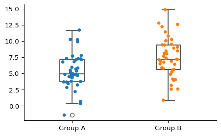
Now that we have seen the data, let’s run the t test. To do it, we use the ttest_ind() function from SciPy.
# Perform an unpaired t test comparing Group A and Group B
# stats.ttest_ind() performs the independent samples t test
# df["Group A"] and df["Group B"] are the two samples we're comparing
# .pvalue extracts just the p-value from the test results
result = stats.ttest_ind(df["Group A"], df["Group B"]).pvalue
# Calculate the mean value for each column in the data frame
# - df.mean() calculates the mean of each column in the original data frame
# - columns=["Mean"] sets the name of the resulting column to "Mean"
means = pd.DataFrame(df.mean(), columns=["Mean"])
display(means)
print(f"Unpaired t test p-value: {result:.1e}")| Mean | |
|---|---|
| Group A | 5.345036 |
| Group B | 7.455855 |
Unpaired t test p-value: 1.5e-03The p-value of the t test is 1.5e-03 so we reject the null hypothesis that the group means are the same.
The t test comes with several important assumptions that should be met for the results to be valid:
- Samples are independent
- Samples have equal variance (homoscedasticity or equal spread of data)
- Data follows a normal distribution
- Random sampling from the population
Mann-Whitney Test
If your data doesn’t follow a normal distribution, you may need a nonparametric alternative like the Mann-Whitney Test. Instead of comparing means, this test determines if values from one group tend to be larger than values from another group.
First, we generate and visualize some data. We will generate some data from a uniform distribution (non-normal), and each of the samples will be small (10 observations each). This is a pretty good use-case for the Mann-Whitney test.
Tip 8.2: Stop & Think
When might you choose a nonparametric test like Mann-Whitney over a parametric test like the t test?
np.random.seed(9382741)
df = pd.DataFrame(
{
"Group A": stats.uniform(loc=5, scale=10).rvs(size=6),
"Group B": stats.uniform(loc=8, scale=10).rvs(size=6),
}
)
sns.catplot(df, kind="strip", height=3, aspect=1.6)
sns.boxplot(df, width=0.25, fill=False, color="#555555")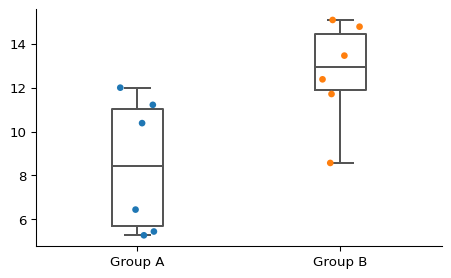
Just from looking at the data, it appears that there might be a real difference between the two groups. Let’s run the Mann-Whitney test to check if they are significantly different.
# Perform the Mann-Whitney U test comparing Groups A and B
# (We extract just the p-value from the test results with the `.pvalue` at the end)
result = stats.mannwhitneyu(df["Group A"], df["Group B"]).pvalue
# Calculate the median value for each column in the data frame
medians = pd.DataFrame(df.median(), columns=["Median"])
display(medians)
print(f"Mann-Whitney test p-value: {result:.2f}")| Median | |
|---|---|
| Group A | 8.414715 |
| Group B | 12.917969 |
Mann-Whitney test p-value: 0.03Cool! So we see that the Mann-Whitney test returned a p-value < 0.05 so we reject the null hypothesis that the distribution underlying group A is the same as the distribution underlying group B.
While the Mann-Whitney test doesn’t assume that the samples come from a normal distribution, it does still have assumptions that should be met and that can affect your interpretation of the results. For more info see here.
Paired Groups
- For comparing the means of paired samples, you will want to use a paired t test.
- The nonparametric companion to the paired t test is the Wilcoxon test.
Paired t test
We use the scipy.stats.ttest_rel() function from SciPy to perform a paired t-test. This statistical test examines whether two related samples (like before-and-after measurements from the same subjects) have the same average values. The test evaluates the null hypothesis that the means of the two paired groups are identical.
Same as before, let’s create some data and make some box plots to check it out. In this dataset, we would expect to see about a 2 unit increase in the post treatment measurements.
# Set the random seed for reproducibility
np.random.seed(964832)
# Generate random pre-treatment measurements from a normal distribution
# with mean=50 and standard deviation=10 for 40 subjects
before_treatment = stats.norm(loc=50, scale=10).rvs(size=40)
# Create a DataFrame with two columns:
# - 'Pre': the pre-treatment measurements
# - 'Post': the pre-treatment values plus a small random effect
# (representing treatment effect) from a normal distribution
# with mean=2 and standard deviation=1
df = pd.DataFrame(
{
"Pre": before_treatment,
"Post": before_treatment + stats.norm(loc=2, scale=1).rvs(size=40),
}
)
# Create a strip plot (jittered points) to visualize the individual data points
# in both Pre and Post groups
sns.catplot(df, kind="strip", height=3, aspect=1.6)
# Add box plots over the strip plots to show summary statistics
# width=0.25 makes the boxes narrow
# fill=False means the boxes are transparent
# color="#555555" sets the box color to a dark gray
sns.boxplot(df, width=0.25, fill=False, color="#555555")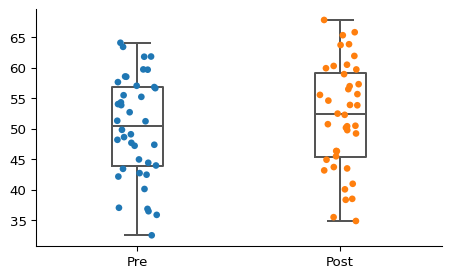
Next, we run the paired t test.
# Run the t test
result = stats.ttest_rel(df["Pre"], df["Post"]).pvalue
# This is to make a nice table with the means.
means = pd.DataFrame(df.mean(), columns=["Mean"])
display(means)
print(f"Unpaired t test p-value: {result:.1e}")| Mean | |
|---|---|
| Pre | 50.150032 |
| Post | 52.008654 |
Unpaired t test p-value: 3.3e-12It is statistically significant! But wait, while our p-value confirms this, we need to consider whether 2 units (whatever those units represent in your experiment) actually matters in your biological system. This is where your expertise as a researcher becomes crucial. It’s important not to rely solely on p-values when interpreting results. In our example, we had sufficient sample size to detect a difference, but that difference might still be too small to have any meaningful biological impact.
Tip 8.3: Stop & Think
Why is it important to consider both statistical significance and biological relevance when interpreting results?
As you can see, this analysis is quite similar to the unpaired test we discussed earlier. The main difference to keep in mind is how you interpret the results: with paired tests, you’re looking at changes within the same subjects (like before and after treatment), rather than differences between separate groups.
Aside: Effect Size and p-values
Scientists have a tendency to focus strongly on p-values, but there is another measure that arguably deserves more attention: effect size. Effect size tells us something different than a p-value: how large or meaningful that effect actually is. It measures the magnitude of differences between groups or the strength of relationships between variables in practical terms. In studies with large sample sizes, it’s very common to find statistically significant results (tiny p-values) alongside tiny effect sizes. This creates a situation where a difference might be technically “real” but practically meaningless. This is precisely why researchers often report both p-values and effect sizes together. P-values answer “Is there an effect?”, while effect sizes answer the equally crucial question: “Does this effect actually matter?” Together, they provide a much more complete and actionable understanding of research findings.
For more on effect sizes, see Using Effect Size–or Why the P Value Is Not Enough.
Tip 8.4: Stop & Think
Can you think of a scenario in the life sciences where a statistically significant result might have a negligible effect size?
Wilcoxon test
The Wilcoxon signed-rank test is used to test the null hypothesis that two related paired samples come from the same distribution. Here is what the SciPy docs have to say about the Wilcoxon signed-rank test:
The Wilcoxon signed-rank test tests the null hypothesis that two related paired samples come from the same distribution. In particular, it tests whether the distribution of the differences x - y is symmetric about zero. It is a non-parametric version of the paired t test.
Note: this is pretty similar to the Mann-Whitney test…we will leave the distinction to your stats professors :)
Again, let’s make some fake data and see how it looks.
# Set a random seed for reproducibility
np.random.seed(9382741)
# Create a DataFrame with two columns:
# 1. "Pre-Treatment": 6 random values from a uniform distribution
# between 5 and 11 (loc=5, scale=6)
# 2. "Post-Treatment": 6 random values from a uniform distribution
# between 6 and 12 (loc=6, scale=6)
df = pd.DataFrame(
{
"Pre-Treatment": stats.uniform(loc=5, scale=6).rvs(size=6),
"Post-Treatment": stats.uniform(loc=6, scale=6).rvs(size=6),
}
)
# Create a strip plot (individual data points) using Seaborn's catplot function
# - height=3 and aspect=1.6 control the dimensions of the plot
sns.catplot(df, kind="strip", height=3, aspect=1.6)
# Add a boxplot on top of the strip plot to show distribution statistics
# - width=0.25: makes the boxes narrower than default
# - fill=False: creates transparent boxes so we can still see the strip plot points
# - color="#555555": sets the box and whisker color to a dark gray
sns.boxplot(df, width=0.25, fill=False, color="#555555")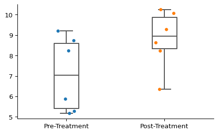
Looks like a bit of difference there, but not too strong. Time for a statistical test!
# Run the Wilcoxon signed-rank test
result = stats.wilcoxon(df["Pre-Treatment"], df["Post-Treatment"]).pvalue
# This is to make a nice table with the medians.
medians = pd.DataFrame(df.median(), columns=["Median"])
display(medians)
print(f"Mann-Whitney test p-value: {result:.2f}")| Median | |
|---|---|
| Pre-Treatment | 7.048829 |
| Post-Treatment | 8.950781 |
Mann-Whitney test p-value: 0.16In this case we fail to reject the null hypothesis that the paired samples com from the same distribution (i.e., that the difference between them is symmetric about zero).
Similar to the Mann-Whitney test, though the Wilcoxon signed-rank test doesn’t assume your data comes from a normal population it does s other assumptions to be aware of. Always consult the relevant statistical literature prior to using these tests in your research.
Comparing Multiple Groups
In the previous sections, we have been focused on comparing two groups. You will often run into cases in which you have more than two groups, or other experimental designs which preclude you from using more straightforward techniques. Let’s see how we can deal with that now.
To compare multiple groups, we most commonly use an Analysis of Variance (ANOVA) test. The one-way ANOVA tests the null hypothesis that two or more groups have the same population mean. It’s nonparametric partner is the Kruskal-Wallis test, which uses ranks instead of raw values, and tests the null hypothesis that the population median of all of the groups are equal.
Let’s revisit the cancer example from last chapter Chapter 7. For the purposes here, we will generate some fake numbers for deaths per 100k people for each of the geographic regions specified by the U.S. Bureau of Labor Statistics.
Imagine we have data points for three locations per state within each region (just assume these are some relevant locations for public health: counties, metro areas, whatever). In this example, we are counting the District of Columbia as a state.
Let’s write a function to generate the data:
# Dictionary mapping each U.S. region to the number of states it contains
REGIONS = {
"Northeast": 7,
"Mid-Atlantic": 7,
"Southeast": 8,
"Midwest": 10,
"Mountain-Plains": 6,
"Southwest": 5,
"West": 8,
}
# Number of sampling locations we'll collect data from in each state
SAMPLING_LOCATIONS_PER_STATE = 3
def generate_cancer_data(region, mean, sd):
"""
Generate simulated cancer death data for a specific region.
Parameters:
region (str): The name of the region from the REGIONS dictionary
mean (float): The mean cancer death count for this region
sd (float): The standard deviation of cancer deaths for this region
Returns:
list: A list of dictionaries containing region and death count data
"""
# Calculate how many states are in this region
state_count = REGIONS[region]
# Calculate total number of observations needed
# (states in region * sampling locations per state)
observation_count = state_count * SAMPLING_LOCATIONS_PER_STATE
# Generate random cancer death counts from a normal distribution
# with the specified mean and standard deviation
observations = stats.norm(loc=mean, scale=sd).rvs(observation_count)
# Convert the raw numbers into a list of dictionaries with region labels
result = [{"Region": region, "Deaths": observation} for observation in observations]
return result
# Create a pandas DataFrame by combining cancer data from all regions
# Each region is assigned different mean death rates to simulate regional variations
# The standard deviation is kept constant at 20 across all regions
cancer = pd.DataFrame(
generate_cancer_data("Northeast", mean=200, sd=20)
+ generate_cancer_data("Mid-Atlantic", mean=200, sd=20)
+ generate_cancer_data("Southeast", mean=225, sd=20) # Highest mean death rate
+ generate_cancer_data("Midwest", mean=195, sd=20)
+ generate_cancer_data("Mountain-Plains", mean=175, sd=20)
+ generate_cancer_data("Southwest", mean=175, sd=20)
+ generate_cancer_data("West", mean=150, sd=20) # Lowest mean death rate
)
# Display the resulting DataFrame
cancer| Region | Deaths | |
|---|---|---|
| 0 | Northeast | 232.569070 |
| 1 | Northeast | 171.141188 |
| 2 | Northeast | 196.646856 |
| 3 | Northeast | 185.546208 |
| 4 | Northeast | 215.395855 |
| ... | ... | ... |
| 148 | West | 187.082183 |
| 149 | West | 164.184395 |
| 150 | West | 123.225502 |
| 151 | West | 199.988325 |
| 152 | West | 159.141206 |
153 rows × 2 columns
Check out the resulting data table. We generate the data to look like this because it is a pretty good representation of how real data might be structured in a CSV or other document. Now let’s plot it:
sns.catplot(cancer, x="Deaths", y="Region", hue="Region", kind="box")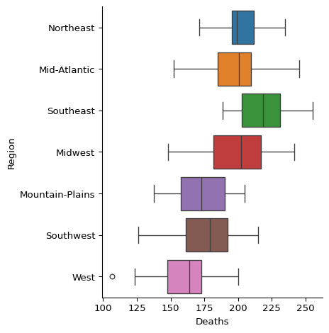
Looks like there may be some significant differences there. Let’s run some statistical tests to see if we can assume that some of the means are different from the others.
One-Way ANOVA
We can use SciPy’s f_oneway() function to run the one-way ANOVA. Here is the blurb from the docs about f_oneway():
The one-way ANOVA tests the null hypothesis that two or more groups have the same population mean. The test is applied to samples from two or more groups, possibly with differing sizes.
The f_oneway() function doesn’t really want to work with data in the format we have it, so we have to pull out each group and pass it in separately:
# Create a list of Series objects, where each Series contains the 'Deaths' values
# for a specific region from the cancer dataset
deaths = [cancer.query(f"Region == '{region}'")["Deaths"] for region in REGIONS.keys()]
# Perform a one-way ANOVA test using the deaths data from all regions
# - The * operator unpacks the deaths list so each Series becomes a separate argument
# - stats.f_oneway compares means of two or more independent samples to determine if they're significantly different
result = stats.f_oneway(*deaths)
# Print the results of the ANOVA test
# - The :.1f formats the F statistic to 1 decimal place
# - The :.1e formats the p-value in scientific notation with 1 decimal place
print(f"F stat: {result.statistic:.1f}, p-value: {result.pvalue:.1e}")F stat: 21.4, p-value: 6.2e-18That’s a significant value, so we reject the null hypothesis that the groups have the same population mean. (Like all the other tests mentioned, it’s a good idea to make sure you are familiar with any assumptions of the test, to ensure you are using and interpreting the results correctly.)
Just for fun, let’s write some “fancy” code:
# Reshape the cancer data frame from long to wide format, with regions as columns
cancer_wide = cancer.pivot(columns="Region")
# Create a list of Series, each containing the cancer deaths for one region
# The dropna() removes any missing values from each region's data
deaths_by_region = [cancer_wide[region].dropna() for region in cancer_wide.columns]
# Perform a one-way ANOVA test to compare means across all regions
# - The * operator unpacks the list so each region's data is passed as a separate argument
result = stats.f_oneway(*deaths_by_region)
# Print the results, formatting F-statistic to 1 decimal place and p-value in scientific notation
print(f"F stat: {result.statistic:.1f}, p-value: {result.pvalue:.1e}")F stat: 21.4, p-value: 6.2e-18Pretty neat!
Tip 8.5: Stop & Think
Which version of the code do you like better? Which do you think is more readable?
Kruskal-Wallis
The ANOVA’s non-parametric partner is the Kruskal-Wallis test. It uses ranks instead of raw values, and tests the null hypothesis that the population median of all of the groups are equal.
The SciPy function for running the Kruskal-Wallis test is called kruskal(). The blurb from the SciPy docs about the test is pretty informative:
The Kruskal-Wallis H-test tests the null hypothesis that the population median of all of the groups are equal. It is a non-parametric version of ANOVA. The test works on 2 or more independent samples, which may have different sizes. Note that rejecting the null hypothesis does not indicate which of the groups differs. Post hoc comparisons between groups are required to determine which groups are different.
The format is pretty much the same as for the ANOVA.
result = stats.kruskal(*deaths)
print(f"H stat: {result.statistic:.1f}, p-value: {result.pvalue:.1e}")H stat: 72.5, p-value: 1.3e-13The p-value is less than our critical threshold of 0.05, so we reject the null hypothesis that median of all of the groups are equal. Just like with the ANOVA, it doesn’t tell us which of the groups is different. We will tackle that question in the next section.
I’m going to start to sound like a broken record here, but, like every other test, make sure you know the assumptions and are using the test correctly if you are using it in your own research!
Post-Hoc Testing
An ANOVA or Kruskal-Wallis test will tell you if there is a significant difference somewhere among multiple groups, but they don’t say which specific groups differ from each other. For this, we need to perform a follow up or post-hoc test. Tukey’s Honestly Significant Difference (Tukey’s HSD) is one of the most popular post-hoc methods for ANOVA (Dunn’s test, which we won’t cover in this chapter, is the most popular for Kruskal-Wallis). It systematically compares all pairs of groups and adjusts the resulting p-values (more on this in the next section). By using a post-hoc test, we can identify which groups differ significantly from each other, transforming a general “something’s different” conclusion into specific insights about where those differences lie.
We can run Tukey’s HSD using the tukey_hsd() from the SciPy package. Here is SciPy’s docs have to say about the function:
The null hypothesis is that the distributions underlying the samples all have the same mean. The test statistic, which is computed for every possible pairing of samples, is simply the difference between the sample means. For each pair, the p-value is the probability under the null hypothesis (and other assumptions; see notes) of observing such an extreme value of the statistic, considering that many pairwise comparisons are being performed. Confidence intervals for the difference between each pair of means are also available.
Note: See how they mention being aware of the assumptions of the test? Make sure to check those out before using Tukey’s HSD in your own research!
Tukey’s HSD with SciPy
You call the tukey_hsd() function just like the f_oneway() and kruskal() functions. We will use the same data again:
result = stats.tukey_hsd(*deaths)
print(result)Tukey's HSD Pairwise Group Comparisons (95.0% Confidence Interval)
Comparison Statistic p-value Lower CI Upper CI
(0 - 1) 2.357 1.000 -16.875 21.588
(0 - 2) -16.746 0.108 -35.367 1.875
(0 - 3) 1.341 1.000 -16.390 19.071
(0 - 4) 28.182 0.001 8.165 48.199
(0 - 5) 26.825 0.004 5.757 47.892
(0 - 6) 40.853 0.000 22.232 59.474
(1 - 0) -2.357 1.000 -21.588 16.875
(1 - 2) -19.103 0.040 -37.724 -0.482
(1 - 3) -1.016 1.000 -18.747 16.715
(1 - 4) 25.825 0.003 5.808 45.842
(1 - 5) 24.468 0.012 3.401 45.535
(1 - 6) 38.496 0.000 19.875 57.117
(2 - 0) 16.746 0.108 -1.875 35.367
(2 - 1) 19.103 0.040 0.482 37.724
(2 - 3) 18.087 0.030 1.021 35.153
(2 - 4) 44.928 0.000 25.497 64.359
(2 - 5) 43.571 0.000 23.060 64.082
(2 - 6) 57.599 0.000 39.609 75.588
(3 - 0) -1.341 1.000 -19.071 16.390
(3 - 1) 1.016 1.000 -16.715 18.747
(3 - 2) -18.087 0.030 -35.153 -1.021
(3 - 4) 26.841 0.001 8.261 45.420
(3 - 5) 25.484 0.003 5.777 45.190
(3 - 6) 39.512 0.000 22.446 56.578
(4 - 0) -28.182 0.001 -48.199 -8.165
(4 - 1) -25.825 0.003 -45.842 -5.808
(4 - 2) -44.928 0.000 -64.359 -25.497
(4 - 3) -26.841 0.001 -45.420 -8.261
(4 - 5) -1.357 1.000 -23.143 20.429
(4 - 6) 12.671 0.451 -6.760 32.102
(5 - 0) -26.825 0.004 -47.892 -5.757
(5 - 1) -24.468 0.012 -45.535 -3.401
(5 - 2) -43.571 0.000 -64.082 -23.060
(5 - 3) -25.484 0.003 -45.190 -5.777
(5 - 4) 1.357 1.000 -20.429 23.143
(5 - 6) 14.028 0.391 -6.483 34.539
(6 - 0) -40.853 0.000 -59.474 -22.232
(6 - 1) -38.496 0.000 -57.117 -19.875
(6 - 2) -57.599 0.000 -75.588 -39.609
(6 - 3) -39.512 0.000 -56.578 -22.446
(6 - 4) -12.671 0.451 -32.102 6.760
(6 - 5) -14.028 0.391 -34.539 6.483
The tukey_hsd() function returns an instance of the TukeyHSDResult class. You may find that the TukeyHSDResult class is not exactly the most user-friendly class. To get the data to put on a chart, you have to do a little bit of work:
# Perform Tukey's HSD (Honest Significant Difference) test on the death data
# This test compares all possible pairs of regions to find significant differences
result = stats.tukey_hsd(*deaths)
# Generate 95% confidence intervals for the differences between means
confidence_interval = result.confidence_interval(0.95)
# Get the list of region names from the REGIONS dictionary
regions = list(REGIONS.keys())
# Create an empty list to store the results for each pair of regions
rows = []
# Loop through all pairs of regions using numpy's ndenumerate to get indices and p-values
for (i, j), p_value in np.ndenumerate(result.pvalue):
# Skip comparing a region to itself (i.e., the diagonal elements)
if i != j:
# Create a dictionary with all the information for this pair of regions
row = {
"Region 1": regions[i],
"Region 2": regions[j],
# Create a label for the pair
"Pair": regions[i] + "-" + regions[j],
# The mean difference between regions
"Difference in Means": result.statistic[i, j],
"p-value": p_value,
"Significant?": p_value < 0.05,
# Lower bound of confidence interval
"CI Low": confidence_interval.low[i, j],
# Upper bound of confidence interval
"CI High": confidence_interval.high[i, j],
}
# Add this pair's results to our list
rows.append(row)
# Convert the list of dictionaries to a pandas DataFrame
# Sort by the difference in means and reset the index
tukey_df = pd.DataFrame(rows).sort_values("Difference in Means").reset_index()
tukey_df # Display the DataFrame
# Create a categorical plot using seaborn
# This will show the difference in means for each pair of regions
facet_grid = sns.catplot(
tukey_df,
y="Pair",
x="Difference in Means",
hue="Significant?",
height=7,
aspect=0.8,
)
# Get the current axis object to add more elements to the plot
# - 'ax' is a common abbreviation you will see when using matplotlib
ax = facet_grid.facet_axis(0, 0)
# Add confidence interval lines for each pair
for idx, row in tukey_df.iterrows():
# Plot a horizontal line for each confidence interval
ax.plot([row["CI Low"], row["CI High"]], [idx, idx], color="#333333", linewidth=1)
# Add a vertical line at x=0
# This helps visualize which differences are positive vs. negative
# If a confidence interval crosses this line, the difference is not significant
ax.axvline(0, linestyle="--", color="#BBBBBB")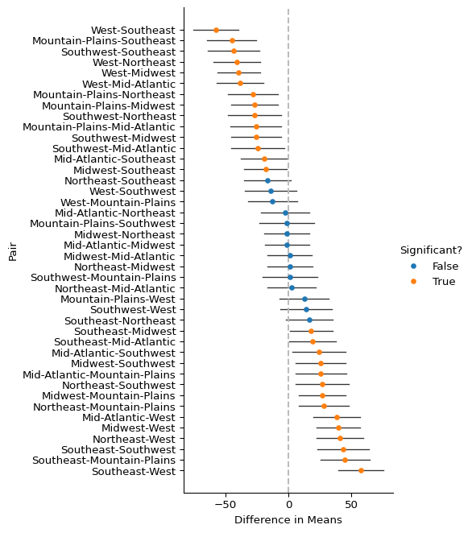
Note: You may want to check out the docs for the numpy.ndenumerate() function as we haven’t covered it before now.
We added in the confidence intervals to the plot. As you can see, the pairs whose confidence interval overlaps with zero are not-significantly different by the test, while those whose confidence interval does not overlap with zero are significantly different by the test.
This code is a bit finicky, and we would like to avoid that sort of code whenever possible. Additionally, the plot itself is fairly tricky to read since there are so many pairs. To help with both these issues, let’s pull in the statsmodels package as it has a nice, built-in way to visualize Tukey’s HSD results.
Tukey’s HSD with statsmodels
To run the test using the statsmodels package, we use pairwise_tukeyhsd(), and to generate the plot we use the plot_simultaneous() function. Let’s see how easy it is to run:
result = statsmodels.stats.multicomp.pairwise_tukeyhsd(cancer["Deaths"], groups=cancer["Region"], alpha=0.05)
# There is a small issue where if you don't set the result of this to a variable,
# you get two charts instead of one.
figure = result.plot_simultaneous()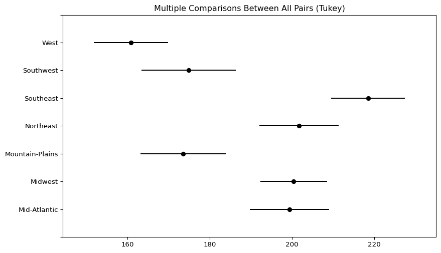
That’s pretty cool! Now, instead of looking at all those pairs, we can look at confidence intervals for each region. If they do not overlap with another region, then those two regions have significantly different deaths per 100k people. Not only did we get a plot that more effectively shows the results, we also got to chop out a ton of code!
Tip 8.6: Stop & Think
Looking at the Tukey’s HSD plot, how would you explain which regions have significantly different cancer death rates?
Linear Regression
Linear regression is incredibly common, and I’m absolutely positive that you all have already used it in your research. Let’s see how it goes in Python!
Linear regression uses one or more explanatory (independent) variables to predict a response (dependent) variable. Simple linear regression refers to a model with only one explanatory variable, while models with two or more explanatory variables are multiple linear regression models. In both cases, we fit a linear model to the data, meaning that we are expecting a straight, non-vertical line. (There’s a really snazzy visual guide to linear regression here.)
Let’s generate and take a look at some data.
# This ensures that random numbers generated will be the same every time the
# code runs
np.random.seed(254370)
# Define how many data points we want to generate
observation_count = 100
# Generate X values from a uniform distribution
# - loc=-50: The lower bound of the distribution
# - scale=100: The range of the distribution (from -50 to -50+100=50)
# - size=observation_count: Generate 100 random values
x = stats.uniform.rvs(loc=-50, scale=100, size=observation_count)
# Generate Y values based on X following a linear relationship: Y = 2X + noise
# 2 * x: This creates a linear relationship where Y increases by 2 for every
# unit increase in X
# stats.norm.rvs(...): This adds random noise from a normal distribution
# - loc=0: The noise is centered around 0 (no bias)
# - scale=20: The standard deviation of the noise is 20
# (determines how scattered the points are)
# - size=observation_count: Generate 100 random noise values
y = 2 * x + stats.norm.rvs(loc=0, scale=20, size=observation_count)
df = pd.DataFrame({"X": x, "Y": y})
# Create a scatter plot to visualize the relationship between X and Y
df.plot(kind="scatter", x="X", y="Y")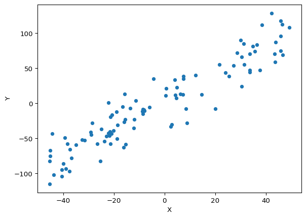
Looks like a pretty strong trend there. Let’s build a linear model using ordinary least squares fitting. We can use the ols() function from the statsmodels package for this. This package has some neat features like the ability to specify models in a way that looks a lot like how we might do it in R.
# Import necessary libraries (assumed to be done before this code)
# statsmodels is used for statistical modeling
# sns (seaborn) is used for data visualization
# Describe the model using the formula interface
# "Y ~ X" means we want to predict Y based on X (simple linear regression)
# This creates a model object but doesn't fit it to the data yet
model = statsmodels.formula.api.ols("Y ~ X", data=df)
# Fit the model to the data
# This performs the actual regression calculations and returns a results object
# containing coefficients, p-values, R-squared, etc.
result = model.fit()
# Display a summary of the regression results
# The summary() method provides a comprehensive report of the model performance
# 'slim=True' parameter gives a condensed version of the output with just essential
# statistics
# This will show coefficients, standard errors, t-values, p-values, R-squared, etc.
print(result.summary(slim=True))
# Create a scatter plot with regression line using seaborn
# lmplot automatically:
# - Creates a scatter plot of the raw data (X vs Y)
# - Fits a regression line
# - Adds a shaded confidence interval around the line
# This provides a visual representation of the relationship we just modeled
# statistically
sns.lmplot(df, x="X", y="Y") OLS Regression Results
==============================================================================
Dep. Variable: Y R-squared: 0.877
Model: OLS Adj. R-squared: 0.875
No. Observations: 100 F-statistic: 696.5
Covariance Type: nonrobust Prob (F-statistic): 2.51e-46
==============================================================================
coef std err t P>|t| [0.025 0.975]
------------------------------------------------------------------------------
Intercept 2.5727 2.091 1.230 0.221 -1.576 6.722
X 1.9263 0.073 26.391 0.000 1.781 2.071
==============================================================================
Notes:
[1] Standard Errors assume that the covariance matrix of the errors is correctly specified.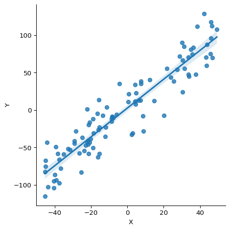
The summary table gives you the main regression result info, including fitted coefficients, standard errors, p-values, R-squared values, etc. We won’t get into the details of how regression is calculated or how exactly to interpret it in this chapter, so just focus on the coefficients and the p-values for now.
In this case, we have a coefficient for X of 1.9, which is pretty close to the true model, and it is significant! Additionally, the R-squared value is 0.877, which means this model captures a lot of the variability in our data. In other words, it’s a very good model!
With No Relationship in the Data
Let’s try another dataset, but this time the response is not related to the predictors.
# Set the seed
np.random.seed(962378)
# Generate the data
observation_count = 100
x = stats.uniform(loc=-50, scale=100).rvs(size=observation_count)
# The response values are basically random noise
y = stats.norm(loc=0, scale=10).rvs(size=observation_count)
df = pd.DataFrame({"X": x, "Y": y})
# Create the model
model = statsmodels.formula.api.ols("Y ~ X", data=df)
# Fit the model
result = model.fit()
# Print the summary and plot the data
print(result.summary(slim=True))
sns.lmplot(df, x="X", y="Y") OLS Regression Results
==============================================================================
Dep. Variable: Y R-squared: 0.001
Model: OLS Adj. R-squared: -0.009
No. Observations: 100 F-statistic: 0.08288
Covariance Type: nonrobust Prob (F-statistic): 0.774
==============================================================================
coef std err t P>|t| [0.025 0.975]
------------------------------------------------------------------------------
Intercept 0.3901 1.057 0.369 0.713 -1.707 2.487
X -0.0115 0.040 -0.288 0.774 -0.091 0.068
==============================================================================
Notes:
[1] Standard Errors assume that the covariance matrix of the errors is correctly specified.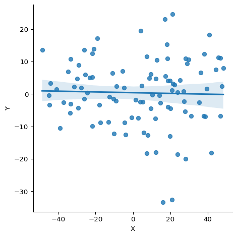
This time, we have pretty much the opposite result. The fitted coefficient is around zero, the line on the plot is basically horizontal, and the R-squared value is very low. So it is very likely that there is no relationship that we can measure between these two variables. And of course, we expected this result, as that is how we set up the data!
Tip 8.7: Stop & Think
What does an R-squared value close to zero tell you about a linear regression model?
Multiple Predictors
Multiple predictors can be given as well. Let’s make another data set with three predictors, \(x_1\), \(x_2\), and \(x_3\). The response \(y\) will only depend on the first two predictors, however.
np.random.seed(526347)
observation_count = 100
# Generate 3 independent variables from uniform distributions
# Each variable ranges from -50 to 50 (loc=-50, scale=100)
x1 = stats.uniform(loc=-50, scale=100).rvs(size=observation_count)
x2 = stats.uniform(loc=-50, scale=100).rvs(size=observation_count)
x3 = stats.uniform(loc=-50, scale=100).rvs(size=observation_count)
# Generate random noise from a normal distribution with mean 0 and standard
# deviation 10
noise = stats.norm(loc=0, scale=10).rvs(size=observation_count)
# Create the dependent variable y as a linear combination of x1 and x2,
# plus noise
# True model: y = 2*x1 - 3*x2 + noise
# - Note that x3 is not used in generating y!
y = 2 * x1 - 3 * x2 + noise
# Create a DataFrame with all variables
# Sort it by the y values and reset the index
df = (
pd.DataFrame({"X1": x1, "X2": x2, "X3": x3, "Y": y})
.sort_values("Y")
.reset_index(drop=True)
)
# Fit a linear regression model using all three predictors
# - Formula notation: Y ~ X1 + X2 + X3
model = statsmodels.formula.api.ols("Y ~ X1 + X2 + X3", data=df)
result = model.fit()
# Display a summary of the regression results
# - slim=True omits some of the more detailed statistics
print(result.summary(slim=True))
# Create a pairplot showing relationships between Y and each predictor
# - kind="reg" adds regression lines to the scatter plots
sns.pairplot(df, kind="reg", y_vars="Y") OLS Regression Results
==============================================================================
Dep. Variable: Y R-squared: 0.990
Model: OLS Adj. R-squared: 0.989
No. Observations: 100 F-statistic: 3044.
Covariance Type: nonrobust Prob (F-statistic): 5.20e-95
==============================================================================
coef std err t P>|t| [0.025 0.975]
------------------------------------------------------------------------------
Intercept 1.1886 0.986 1.205 0.231 -0.769 3.146
X1 2.0538 0.033 62.303 0.000 1.988 2.119
X2 -2.9983 0.037 -81.967 0.000 -3.071 -2.926
X3 0.0445 0.034 1.318 0.191 -0.023 0.112
==============================================================================
Notes:
[1] Standard Errors assume that the covariance matrix of the errors is correctly specified.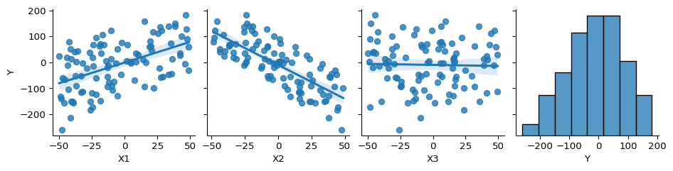
The coefficients of the variables, p-values, and scatter plots are all about what we would expect given the way we generated the data.
One cool thing to call out is the pairplot() function from seaborn. It’s a nice way to visualize multiple variables at the same time. Here, we can see a positive association between X1 and y, a negative association between X2 and y, and no association between X3 and y. Cool!
Linear regression assumes some things about your data (are you tired of me saying this yet…). For example, the JMP docs put it this way:
- The true relationship is linear
- Errors are normally distributed
- Homoscedasticity of errors (or, equal variance around the line).
- Independence of the observations
It’s a good idea to check these assumptions before interpreting your results. There are many common diagnostic plots for doing so, like the normal Q-Q plot, and the scale-location plot, but that is a story for another time!
Note: There is a really cool site that talks about how most common statistical models are basically linear models (or at least, very close to them). It’s a pretty neat way to think of statistical modeling that I encourage you to check out!
Tip 8.8: Stop & Think
In our multiple regression example, how could you determine which predictors are most important for the model?
Dimensionality Reduction & Clustering
Let’s switch gears a little bit and introduce dimensionality reduction and clustering. Dimensionality reduction techniques help transform complex high-dimensional data (like genomic or proteomic datasets with thousands of features) into simpler representations that capture the essential patterns. Clustering methods then help identify natural groupings within this data, allowing you to discover hidden structures without prior labeling. These techniques are common tools in bioinformatics that allow researchers to visualize complex biological relationships, identify subtypes of diseases, or group similar protein structures together when manual classification would be impractical.
Principal Components Analysis (PCA)
Principal Component Analysis (PCA) is a widely used dimensionality reduction technique that transforms your original variables into a new set of uncorrelated variables called principal components. These principal components are ordered by how much of the original data’s variance they capture, with the first component accounting for the most variance, the second component capturing the second most, and so on. PCA is more or less finding the directions (or axes) along which your data varies the most, allowing you to reduce dimensionality while preserving as much information as possible.
Note: there is another way to think of PCA, and that is as a form of indirect gradient analysis or as biplots of compositional data, which are two of my favorite topics. Unfortunately, or maybe fortunately depending on your interests, we won’t be covering that here!
First, let’s read in the data. You might recognize this dataset, its Fisher’s famous iris dataset!
iris = pd.read_csv("../_data/iris.csv")
display(iris)
sns.pairplot(iris, hue="Species")| Sepal.Length | Sepal.Width | Petal.Length | Petal.Width | Species | |
|---|---|---|---|---|---|
| 0 | 5.1 | 3.5 | 1.4 | 0.2 | setosa |
| 1 | 4.9 | 3.0 | 1.4 | 0.2 | setosa |
| 2 | 4.7 | 3.2 | 1.3 | 0.2 | setosa |
| 3 | 4.6 | 3.1 | 1.5 | 0.2 | setosa |
| 4 | 5.0 | 3.6 | 1.4 | 0.2 | setosa |
| ... | ... | ... | ... | ... | ... |
| 145 | 6.7 | 3.0 | 5.2 | 2.3 | virginica |
| 146 | 6.3 | 2.5 | 5.0 | 1.9 | virginica |
| 147 | 6.5 | 3.0 | 5.2 | 2.0 | virginica |
| 148 | 6.2 | 3.4 | 5.4 | 2.3 | virginica |
| 149 | 5.9 | 3.0 | 5.1 | 1.8 | virginica |
150 rows × 5 columns
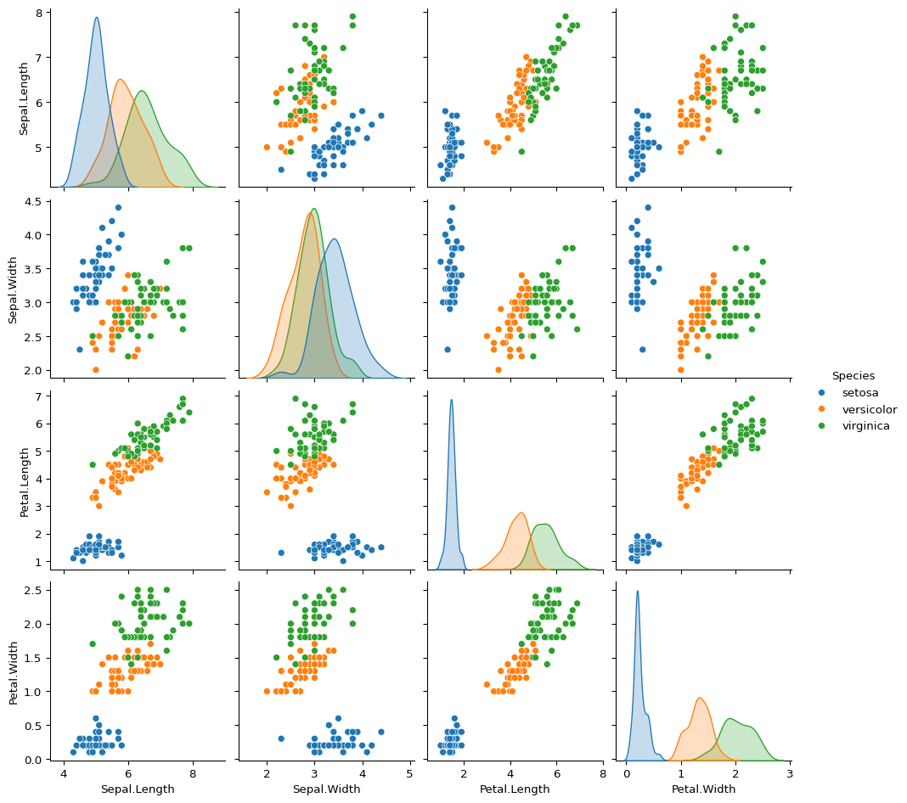
We can use the PCA class from the statsmodels package to compute the PCA:
result = PCA(
# The data to perform PCA on - our iris dataset without the 'Species' column
# We're only using the numeric feature columns
iris.drop(columns="Species"),
# demean=True means that the mean will be subtracted from each feature
# This centers the data around zero
# R's `prcomp()` calls this parameter "center"
demean=True,
# standardize=False means that we are NOT scaling each feature to have unit variance
# If True, each feature would be divided by its standard deviation
# R's `prcomp()` would use both center = TRUE and scale. = TRUE for standardization
standardize=False,
# We won't get into the math behind this parameter. Just know that setting it to
# False is the more typical use case for our purposes.
normalize=False,
# ncomp=2 specifies that we want to keep only the first 2 principal components
# These will be the 2 directions that capture the most variance in the data
ncomp=2,
)
resultPrincipal Component Analysis(nobs: 150, nvar: 4, transformation: Demean (Covariance), normalization: False, number of components: 2, SVD, id: 0x120c2b0e0)Once PCA is performed, we can visualize the data by plotting the projections onto the first two principal components:
# Prepare the data for plotting
plot_data = (
result.scores.rename(
columns={
# Rename the first principal component for better readability
"comp_0": "PC 1",
# Rename the second principal component for better readability
"comp_1": "PC 2",
}
)
# Add the Species column from the original dataset for coloring points
.assign(Species=iris["Species"])
)
# Create a scatter plot using seaborn
# - relplot creates a relational plot (scatter plot in this case)
# - x and y specify which columns to use for the x and y axes
# (the first two principal components)
# - hue colors the points based on the Species column
sns.relplot(plot_data, x="PC 1", y="PC 2", hue="Species")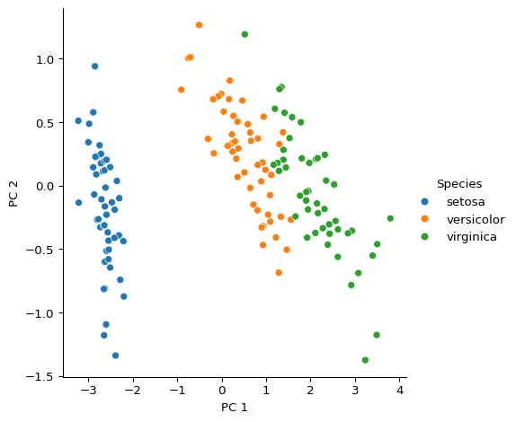
As you can see, the three species are fairly well separated along the x-axis, which represents the first principal component.
Tip 8.9: Stop & Think
What biological interpretation might you give to the first principal component in this iris dataset analysis?
There is a lot more to say about PCA, including differences between using the covariance vs. correlation matrix, biplots, interpretation, etc., but we will leave it there for now.
k-means Clustering
K-means clustering is a common unsupervised machine learning technique that partitions your data into a specified number, k, of distinct, non-overlapping groups, without requiring labeled training data. The algorithm works by iteratively assigning data points to the nearest cluster center, then recalculating those centers until convergence is reached. Some use cases for k-means clustering include grouping genes given expression data, identifying protein function similarities, or finding patient subgroups with similar clinical profiles.
We can use SciPy’s kmeans2() function to run the k-means algorithm on our iris data:
# Set the random seed for reproducibility
np.random.seed(238974)
# Perform K-means clustering on the iris dataset
# - We're using the numeric columns of the iris data frame
# - We specify k=3 to create 3 clusters (matching the number of iris species)
# - We ignore the _centroids
# - `labels` will contain the cluster assignment (0, 1, or 2) for each iris sample
_centroids, labels = cluster.vq.kmeans2(iris.drop(columns="Species"), k=3)
# Create a scatter plot to visualize the clustering results
# - We're plotting the first two principal components (PC 1 vs PC 2)
# - Each point is colored by its actual species (using 'hue')
# - Each point's marker style is determined by its cluster assignment (using 'style')
# - This allows us to compare the actual species classifications with the clustering
# results
# - 'plot_data.assign(Cluster=labels)' adds the cluster labels as a new column to the
# data frame
sns.relplot(
plot_data.assign(Cluster=labels),
x="PC 1",
y="PC 2",
hue="Species",
style="Cluster",
legend="full",
)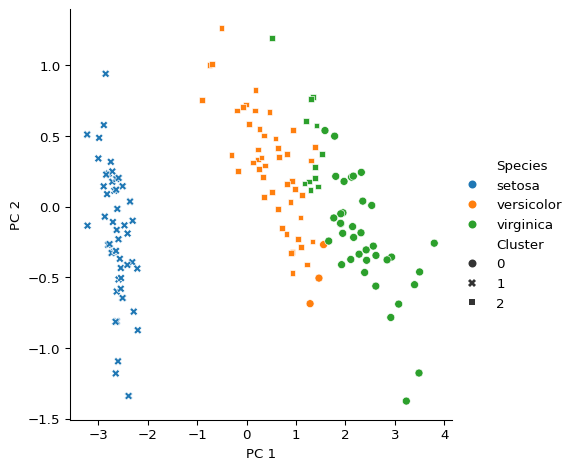
We can see that there is pretty good overlap between the clusters assigned by the k-means algorithm with the true species groupings. In most cases, you won’t get clusters that perfectly represent your data. For this reason, there are a ton of techniques to help you evaluate and optimize clustering and other classification methods that we won’t get into here. Instead, we will keep it super simple and just look at the proportion of cluster labels for each species. This will give us a rough idea about the quality of the clustering results.
def proportions(clusters):
# Count occurrences of each cluster value
counts = Counter(clusters)
# Get total number of items in clusters
total = len(clusters)
# Calculate proportion for each cluster and sort by cluster id
proportions = {cluster: count / total for cluster, count in sorted(counts.items())}
return proportions
# For each species in the iris dataset:
# - Assign the cluster labels to a new column 'Cluster'
# - Group by 'Species'
# - Aggregate the 'Cluster' column using the proportions function
#
# This shows the distribution of cluster assignments within each species
iris.assign(Cluster=labels).groupby("Species").agg({"Cluster": proportions})| Cluster | |
|---|---|
| Species | |
| setosa | {1: 1.0} |
| versicolor | {0: 0.06, 2: 0.94} |
| virginica | {0: 0.74, 2: 0.26} |
That’s pretty good! The k-means clustering pretty well describes the setosa and versicolor species, but the virginica species gets mislabelled about 25% of the time.
Tip 8.10: Stop & Think
What might explain why k-means clustering performed well for setosa and versicolor but less well for virginica?
Summary
This chapter covered key statistical and modeling techniques in Python used in life sciences. We looked at methods for comparing groups, including t-tests, ANOVA, and non-parametric alternatives, with a focus on understanding p-values and effect sizes. We also introduced linear regression for exploring relationships between variables, as well as dimensionality reduction and clustering for identifying patterns in data. Throughout, we highlighted the importance of understanding the assumptions behind these methods and interpreting results carefully. Effective data analysis goes beyond running code–it involves choosing the right methods, making sense of the results, and linking them to biological questions. Python offers a range of tools that, when used thoughtfully, support meaningful and clear analysis of experimental data.
Practice Problems
8.1
Write code to generate two groups of 30 samples each, where group A has a mean of 10 and standard deviation of 2, and group B has a mean of 15 and standard deviation of 2. Then perform an unpaired t-test to compare them.
8.2
Add a third group (mean 11, standard deviation of 2) to the dataset from the last problem. Then perform an ANOVA to determine if there are statistically significant differences between them.
8.3
Run Tukey’s HSD on the data from Section 8.7.2.
8.4
Generate a dataset with one response variable and two predictor variables, where only one predictor has a relationship with the response. Fit a multiple regression model and determine which predictor is significant.
8.5
Perform k-means clustering with k=2 on the iris dataset. Does this grouping make biological sense? Justify your answer with a visualization.